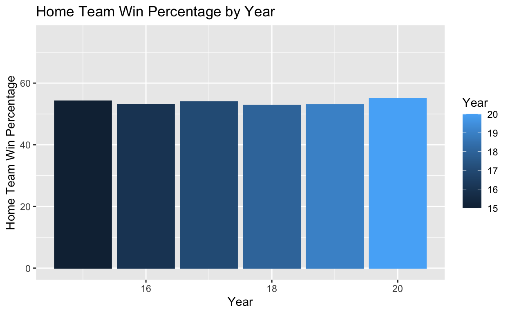

My final project
I am interested in examining the phenomenon of Home Field Advantage in the MLB, and how the presence or absence of fans affects this concept. I will be using MLB data from 2015-2020, which includes the 2020 COVID-19 season when no fans were present at games.
How does the presence of fans at Major League Baseball (MLB) games affect home field advantage? In this study, I plan to examine: A) home field advantage in the MLB and B) whether or not the presence or absence of fans affects home field advantage. I hypothesize that home field advantage positively affects win percentage, but that home teams who play in front of their fans have a much higher win percentage than home teams that played in empty stadiums during the 2020 COVID-19 season. I expect that teams playing on their home fields are more likely to win compared to when they are traveling and playing at “away” parks, but that playing in front of home town fans amplifies this effect, and the absence of fans diminishes the effectiveness of home field advantage. My sample is comprised of MLB game data from 2015-2020, in which the games between 2015-2019 were played under normal conditions but games played during the 2020 season were played without fans in attendance. The explanatory variable of interest is attendance, which is measured numerically by the number of people who attended each baseball game. My outcome variable is whether or not the home team won or lost the game. Currently, the data set only has the raw scores by both the home and away teams, so I will need to create a separate column for “home team outcome” that is coded =1 (win) or =0 (loss). To support my hypothesis, I will first need to confirm that home field advantage exists in the MLB. Since MLB teams play an equal amount of home and away games in their 162-game season, home field advantage would be represented by a increase in average win percentage at home compared to away. Then, using the COVID data from the 2020 season where there were no fans, a decrease in average home field win percentage would confirm my hypothesis that the presence of fans affects home field advantage. My hypothesis would be disproved either by the absence of evidence supporting home field advantage or by there being no significant change in the home field win percentage during regular years compared to the COVID year.
https://dataverse.harvard.edu/dataset.xhtml?persistentId=doi:10.7910/DVN/15CITZ https://doi.org/10.7910/DVN/15CITZ
library(tidyverse)
MLB <- read_csv("data/Copy_of_retrosheetdata.csv")
MLB <- MLB |>
select(-Number_of_game, -Day_of_week, -Visiting_team_game_number, -Home_team_game_number, -Length_of_game_in_outs, -Completion_information, -Forfeit_information, -Protest_information, Visiting_line_scores, -Home_line_scores)
MLB <- MLB |>
mutate(Home_team_win = if_else(Home_team_score > Visiting_team_score, 1, 0))
MLB$Attendance <- if_else(is.na(MLB$Attendance), 0, MLB$Attendance)
MLB$Date <- as.Date(MLB$Date, format = "%m/%d/%Y")
MLB <- MLB |>
mutate(Year = year(Date))
MLB_19 <- MLB |>
filter(Year == 19)
MLB_20 <- MLB |>
filter(Year == 20)
MLB_1920 <- MLB |>
filter(Year >= 19)
MLB_healthy <- MLB |>
filter(Year < 20)MLB_19 <- MLB_19 |>
mutate(home_win_pct19 = (sum(Home_team_win == 1) / n()) * 100)
MLB_20 <- MLB_20 |>
mutate(home_win_pct20 = (sum(Home_team_win == 1) / n()) * 100)
MLB_1920 %>%
group_by(Year) %>%
summarize(`Home Team Win %` = (mean(Home_team_win) * 100))# A tibble: 2 × 2
Year `Home Team Win %`
<dbl> <dbl>
1 19 52.9
2 20 55.0MLB_19# A tibble: 2,429 × 15
Date Visiting_team Visiting_team_league Home_team
<date> <chr> <chr> <chr>
1 0019-03-20 SEA AL OAK
2 0019-03-21 SEA AL OAK
3 0019-03-28 PIT NL CIN
4 0019-03-28 ARI NL LAN
5 0019-03-28 COL NL MIA
6 0019-03-28 SLN NL MIL
7 0019-03-28 ATL NL PHI
8 0019-03-28 SFN NL SDN
9 0019-03-28 NYN NL WAS
10 0019-03-28 CHA AL KCA
# ℹ 2,419 more rows
# ℹ 11 more variables: Home_team_league <chr>,
# Visiting_team_score <dbl>, Home_team_score <dbl>,
# Day_night <chr>, Park_ID <chr>, Attendance <dbl>,
# Time_of_game_in_minutes <dbl>, Visiting_line_scores <chr>,
# Home_team_win <dbl>, Year <dbl>, home_win_pct19 <dbl>MLB_20# A tibble: 898 × 15
Date Visiting_team Visiting_team_league Home_team
<date> <chr> <chr> <chr>
1 0020-07-23 SFN NL LAN
2 0020-07-23 NYA AL WAS
3 0020-07-24 MIL NL CHN
4 0020-07-24 DET AL CIN
5 0020-07-24 SFN NL LAN
6 0020-07-24 ATL NL NYN
7 0020-07-24 MIA NL PHI
8 0020-07-24 ARI NL SDN
9 0020-07-24 PIT NL SLN
10 0020-07-24 BAL AL BOS
# ℹ 888 more rows
# ℹ 11 more variables: Home_team_league <chr>,
# Visiting_team_score <dbl>, Home_team_score <dbl>,
# Day_night <chr>, Park_ID <chr>, Attendance <dbl>,
# Time_of_game_in_minutes <dbl>, Visiting_line_scores <chr>,
# Home_team_win <dbl>, Year <dbl>, home_win_pct20 <dbl>MLB_win_pct <- MLB |>
group_by(Year) |>
summarize(`Home Team Win %` = (mean(Home_team_win) * 100))
home_field_plot <- MLB_win_pct |>
ggplot(mapping = aes(x = Year, y = `Home Team Win %`, fill = Year, color = Year)) +
geom_col() +
labs(title = "Home Team Win Percentage by Year",
x = "Year",
y = "Home Team Win Percentage") +
ylim(0, 75)
home_field_plot
MLB <- MLB |>
mutate(Attendance_bi = if_else(Attendance >= 1, 1, 0))
lm(Home_team_win ~ Attendance_bi, data = MLB)
Call:
lm(formula = Home_team_win ~ Attendance_bi, data = MLB)
Coefficients:
(Intercept) Attendance_bi
0.54632 -0.01238 MLB_healthy <- MLB_healthy |>
mutate(Attendance100 = Attendance / 100)
summary(lm(Home_team_win ~ Attendance + Home_team, data = MLB_healthy))
Call:
lm(formula = Home_team_win ~ Attendance + Home_team, data = MLB_healthy)
Residuals:
Min 1Q Median 3Q Max
-0.6712 -0.5194 0.3668 0.4739 0.5952
Coefficients:
Estimate Std. Error t value Pr(>|t|)
(Intercept) 4.775e-01 3.384e-02 14.109 < 2e-16 ***
Attendance 1.235e-06 6.213e-07 1.987 0.04694 *
Home_teamARI 3.728e-03 3.557e-02 0.105 0.91652
Home_teamATL -1.200e-02 3.528e-02 -0.340 0.73377
Home_teamBAL -1.720e-02 3.598e-02 -0.478 0.63270
Home_teamBOS 5.346e-02 3.491e-02 1.531 0.12573
Home_teamCHA -2.537e-02 3.640e-02 -0.697 0.48582
Home_teamCHN 1.054e-01 3.489e-02 3.022 0.00251 **
Home_teamCIN -4.002e-02 3.591e-02 -1.114 0.26514
Home_teamCLE 8.756e-02 3.627e-02 2.414 0.01577 *
Home_teamCOL 8.047e-03 3.494e-02 0.230 0.81785
Home_teamDET -7.264e-02 3.550e-02 -2.046 0.04077 *
Home_teamHOU 1.011e-01 3.509e-02 2.881 0.00397 **
Home_teamKCA -6.156e-03 3.557e-02 -0.173 0.86259
Home_teamLAN 1.271e-01 3.540e-02 3.592 0.00033 ***
Home_teamMIA -2.280e-02 3.719e-02 -0.613 0.53991
Home_teamMIL 2.308e-02 3.502e-02 0.659 0.50993
Home_teamMIN 1.400e-02 3.561e-02 0.393 0.69409
Home_teamNYA 1.002e-01 3.495e-02 2.868 0.00414 **
Home_teamNYN 1.535e-02 3.513e-02 0.437 0.66223
Home_teamOAK 3.147e-02 3.655e-02 0.861 0.38936
Home_teamPHI 1.539e-03 3.559e-02 0.043 0.96552
Home_teamPIT 2.284e-02 3.591e-02 0.636 0.52471
Home_teamSDN -4.835e-02 3.533e-02 -1.369 0.17114
Home_teamSEA -1.620e-02 3.555e-02 -0.456 0.64854
Home_teamSFN -1.484e-02 3.492e-02 -0.425 0.67098
Home_teamSLN 3.772e-02 3.507e-02 1.076 0.28209
Home_teamTBA 4.216e-02 3.752e-02 1.124 0.26112
Home_teamTEX 1.945e-02 3.523e-02 0.552 0.58086
Home_teamTOR 1.483e-02 3.499e-02 0.424 0.67167
Home_teamWAS 6.248e-02 3.514e-02 1.778 0.07545 .
---
Signif. codes: 0 '***' 0.001 '**' 0.01 '*' 0.05 '.' 0.1 ' ' 1
Residual standard error: 0.4967 on 12116 degrees of freedom
Multiple R-squared: 0.01134, Adjusted R-squared: 0.008892
F-statistic: 4.632 on 30 and 12116 DF, p-value: 7.5e-16MLB <- MLB |>
mutate(Attendance_100 = Attendance / 100)
summary(lm(Home_team_win ~ Attendance + Home_team, data = MLB))
Call:
lm(formula = Home_team_win ~ Attendance + Home_team, data = MLB)
Residuals:
Min 1Q Median 3Q Max
-0.6696 -0.5192 0.3668 0.4752 0.5736
Coefficients:
Estimate Std. Error t value Pr(>|t|)
(Intercept) 5.066e-01 2.788e-02 18.166 < 2e-16 ***
Attendance 4.403e-07 4.180e-07 1.053 0.29222
Home_teamARI -2.379e-03 3.395e-02 -0.070 0.94413
Home_teamATL -8.100e-03 3.384e-02 -0.239 0.81081
Home_teamBAL -3.101e-02 3.412e-02 -0.909 0.36344
Home_teamBOS 3.731e-02 3.369e-02 1.108 0.26800
Home_teamCHA -2.890e-02 3.431e-02 -0.842 0.39959
Home_teamCHN 1.038e-01 3.367e-02 3.082 0.00206 **
Home_teamCIN -4.500e-02 3.409e-02 -1.320 0.18686
Home_teamCLE 7.678e-02 3.425e-02 2.242 0.02501 *
Home_teamCOL -1.267e-03 3.370e-02 -0.038 0.97001
Home_teamDET -8.017e-02 3.397e-02 -2.360 0.01829 *
Home_teamHOU 1.013e-01 3.376e-02 3.000 0.00271 **
Home_teamKCA -1.388e-02 3.395e-02 -0.409 0.68278
Home_teamLAN 1.393e-01 3.387e-02 4.113 3.93e-05 ***
Home_teamMIA -3.644e-02 3.464e-02 -1.052 0.29282
Home_teamMIL 1.802e-02 3.373e-02 0.534 0.59328
Home_teamMIN 2.304e-02 3.397e-02 0.678 0.49761
Home_teamNYA 1.092e-01 3.370e-02 3.240 0.00120 **
Home_teamNYN 4.935e-03 3.377e-02 0.146 0.88384
Home_teamOAK 3.016e-02 3.436e-02 0.878 0.38017
Home_teamPHI -2.286e-03 3.397e-02 -0.067 0.94633
Home_teamPIT 4.410e-03 3.411e-02 0.129 0.89711
Home_teamSDN -4.006e-02 3.386e-02 -1.183 0.23677
Home_teamSEA -2.083e-02 3.395e-02 -0.614 0.53949
Home_teamSFN -7.724e-03 3.369e-02 -0.229 0.81868
Home_teamSLN 3.915e-02 3.375e-02 1.160 0.24609
Home_teamTBA 3.667e-02 3.477e-02 1.055 0.29162
Home_teamTEX 1.467e-02 3.382e-02 0.434 0.66435
Home_teamTOR 1.544e-02 3.372e-02 0.458 0.64706
Home_teamWAS 4.869e-02 3.378e-02 1.441 0.14954
---
Signif. codes: 0 '***' 0.001 '**' 0.01 '*' 0.05 '.' 0.1 ' ' 1
Residual standard error: 0.4967 on 13014 degrees of freedom
Multiple R-squared: 0.01055, Adjusted R-squared: 0.008273
F-statistic: 4.627 on 30 and 13014 DF, p-value: 7.828e-16After filtering the data to include only seasons in which fans are present at games (2015-2019), we see a positive relationship between teams with a high home team win percentage and fan turnout at these games. This could mean two things: either that good teams attract more fans, or that a greater attendance motivates teams to perform better, which would support conventional thoughts surrounding home field advantage. There are also other confounding variables to consider, such as the fact that home teams do not travel to home games, they are familiar with their setting, and get to prepare in their usual locker room and practice facilities.
However, looking at the 2020 season during COVID-19 in which no fans were present at games, we see that home teams actually have a higher average win percentage than the five previous years in the data set (Visualization 1). Through this analysis, we can infer that fan presence or attendance does not affect home team performance as much as other known and unknown varaibles, and that higher attendance metrics are more so products of team performance.